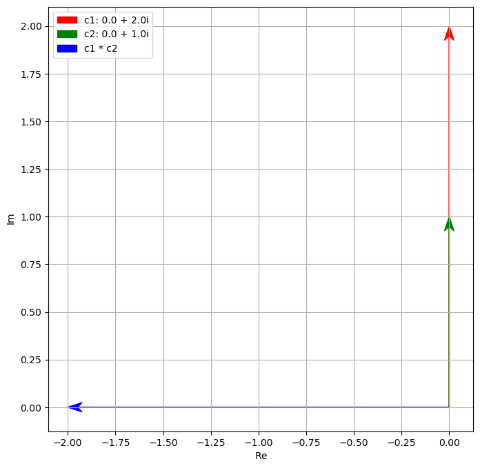
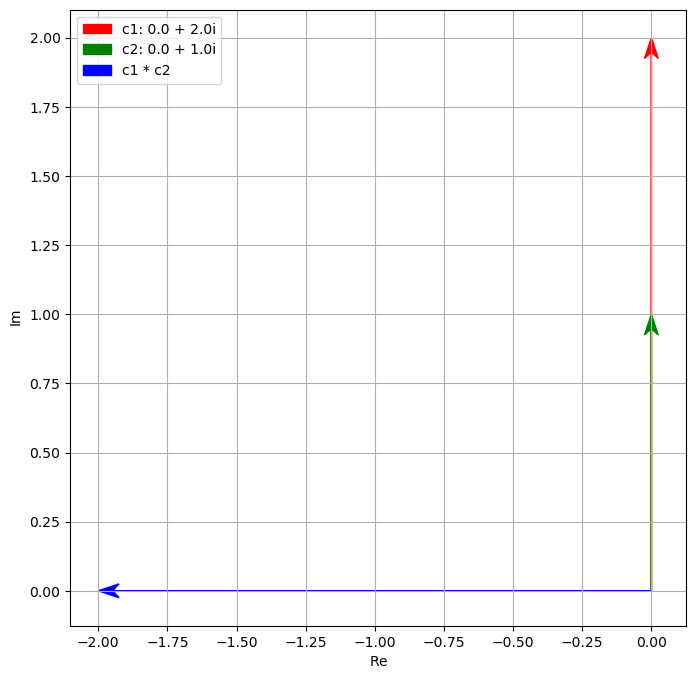

3. How to imaginery something not possible to exist (PY version)#
actually the imaginery number is unusual, but not that unusual.
Like negative number and zero it does not exist.
But it exist somehow in some way and you know it, like the zero in Babylonian system.
You need it, even though, well, it does not exist.
It seems others can do this but not me
We can easily compute it analytically
But let’s try computing using the trapezoid rule.
It seems others can do this but not me
Fourier Transform of $f(x)$ is $F(k)$
where \(k=\frac{2\pi}{x}\) is called the “wavenumber”
The major turning point is in the climbing of grease pole of being a maths professor!
In the video I provided (see https://www.youtube.com/watch?v=cUzklzVXJwo), one of the challenge at that time is the equation of
Now this equation can be solved unlike \(x^{2} = -1\) which we can say there is no solution.
Simple! 4 is an answer!!! But then we have a problem, the general equation leads to this:
in fact this complex expression is just 4,
as it turns out it that if you treat \(\sqrt[3]{2 + \sqrt{-121}}\) as \(a + bi\) and \(\sqrt[3]{2 - \sqrt{-121}}\) as \(a - bi\) then one can find out that
\({2+(-121)^(1/2)}^(1/3) = 2+i\) and \({2-(-121)^(1/2)}^(1/3) = 2-i\) and together it is just 4
in fact once we know 4 is a factor you can easily found out all the REAL root of this equation:
i.e. 4, \(-2-\sqrt{3}\) and \(-2+\sqrt{3}\)
and the equation would be
It is only the intermediate step use imaginery number!
(Just like later quantum mechanics, the intermediate step use imaginary number, but one can only observe real number … a major debate leading to Coppehegan Interpretation, or just shut up and calculate!)
If imaginary numner i.e \(i^2 = -1\), it does not exist it seems.
But could it be like the i above and the 0 in babylon above, we can treat it as existed but not ultimately.
In fact this concept also apply to the trial of Galialo!
(Just he does not accept this kind of argument. No tool argument. No just calculate…)
Our mind is bounded as we too used to the magic of the arthimetic since ancient times:
一與言為二，二與一為三。自此以往，巧歷不能得，而況其凡乎！
One and Speech are two; two and one are three.
Going on from this (in our enumeration), the most skilful reckoner cannot reach
(the end of the necessary numbers), and how much less can ordinary people do so!
see https://ctext.org/zhuangzi/adjustment-of-controversies
道生一，一生二，二生三，三生萬物
"The Dao produced One; One produced Two; Two produced Three; Three produced All things."
see https://ctext.org/dao-de-jing
(Unlike zhuang zi, Laozi may also touch on older modular view of I Ching
but not necessarily Zhou version; both he and Zhuang Zi likely of one dynasty before
One has to go back much earlier to know there might be at least 5 sources ....)
+/* can stay on natural number stated above ... may have prime/composite number
0 may or may not natural number ...
------ that is gap here as pointed out by the "mad" maths guy
Once we start to think backward then we have a lot of number/problem/issue:
- reverse of +
rotation of 180 degree or pi radian?
reflection
shift
already unnatural (0 by Indian, -ve by Chinese)
generate integer
/ reverse of *
have rational number (by Egyptians)
(technically can generate infinite but seems not historical from this line of thinking?)
(lots of strange number like finite decimal, dyadic (final binary), repeating decimal
but one must be careful, the reason why it is that because we try to express say
1/3 as a sum of 1/10+...
/sqrt reverse of one particular type of *
irrational especially possibly the first example of $/sqrt{2}$
(proved by geometry then)
... algeraic irrational and a lot of others like our imaginery number
ratio and change
pi (nature unknown and only in 19th century prove to transcental like e)
ratio of circumference and radius (radian is 2pi because of 2 pi r)
e as the growth rate or change in y is equal to y
complex number
discussed here through algbera
many strange number system now, but unlike many other systems,
they ARE NUMBER SYSTEM e.g. you can +/-/*///^ etc.
But we most use real number (and in fact can stay on it even if we use imaginery number)
Let us SEE THE MAGIC
Note
In fact one can see that every 4 operation of i comes back to 1
What is that operation
ROTATION! to be exact rotation of 90 degree or pi/2 radian
i is not on real number line and is NOT a real number no doubt,
but could be it is a rotation of real number to another dimension
Things does not exist in the real world may not have consequences in the real world
Think
Outside the box
北冥有魚，其名為鯤。鯤之大，不知其幾千里也。
化而為鳥，其名為鵬。鵬之背，不知其幾千里也；
怒而飛，其翼若垂天之雲。是鳥也，海運則將徙於南冥
In the Northern Ocean there is a fish, the name of which is Kun
- I do not know how many li in size.
It changes into a bird with the name of Peng,
the back of which is (also) - I do not know how many li in extent.
When this bird rouses itself and flies,
its wings are like clouds all round the sky.
When the sea is moved (so as to bear it along),
it prepares to remove to the Southern Ocean.
The Southern Ocean is the Pool of Heaven.
see https://ctext.org/zhuangzi/enjoyment-in-untroubled-ease
Once we accept another sky dimension we can no longer bounded by the sea
The metamorphosis of 鯤(Kun)鵬(Peng), no longer a fish but a bird!!!
For those of us never accept another dimesion and never become a big bird, well, one can still have a way to think beyond one’s dimension by some trick.
Let us define left turn as the change from 1 to 0 and left turn more from 0 to -1 and left turn one more time from -1 to 0 and left turn for the 4th time from 0 to 1. From a 2d world it is obvious. But even for a 1d being, one can still note the difference (1,0), (0,-1), (-1,0) and (0,1) are different somehow. One can call it rotate 90 degree to the left. One can call it just a change in number in different ways. Still one can apprecaite it in this way.
Further, one can even define imaginary number dimension in the following way, mapping the radius 1 imaginery circle onto the real line, which the Red 1d real guy insisted. How? Simple, we define change to the left angle \(\theta\) as \((1 - \theta) radian\) from 1 to -1 and when reach -1, the left turn continue but by turning \((-1 + \theta) radian\). Using that it still benefit from many of the multiplication of imaginery number as it effectively project the imaginery number turning into a movement of the real line.
Once we open up i as another dimension
In fact it has to be 90 degree from real number dimension,
i and 1 could easily AND NATURALLY form a number with 2 dimensional
The other trick now is because it comes from rotation,
there is a lot of usefulness to it and it is now everywhere!
#%matplotlib inline
#%matplotlib inline
#import /var/mobile/Containers/Data/Application/2C38E445-B03B-4F08-B850-A9AFC5759E32/Library/Application\ Support/com.rationalmatter.junoapp/python-home/lib
#import "/var/mobile/Containers/Data/"
#import lib.main.a1_i_mul_plot
# seems to work in generating html
#lib.main.a1_i_mul_plot
# work here -- if inline but not under TkAgg
#lib.main.a1_i_mul_plot.some_plot()
%matplotlib inline
# inline
# notebook
# inline
# lib.main.a1_i_mul_plot.some_plot()
#from lib.main import a1_i_mul_plot
#a1_i_mul_plot.some_plot()
import numpy as np
from matplotlib import pyplot as plt
#%matplotlib inline
def generate_figure(figsize=(4, 4), xlim=[0, 1], ylim=[0, 1]):
"""Generate figure for plotting complex numbers
Notebook: PCP_06_complex.ipynb
Args:
figsize: Width, height in inches (Default value = (2, 2))
xlim: Limits for x-axis (Default value = [0, 1])
ylim: Limits for y-axis (Default value = [0, 1])
"""
plt.figure(figsize=figsize)
plt.grid()
plt.xlim(xlim)
plt.ylim(ylim)
plt.xlabel('$\mathrm{Re}$')
plt.ylabel('$\mathrm{Im}$')
# no use here it seems -- plt.axis('square')
# subplot use set_aspect('equal', adjustable='box')
def plot_vector(c, color='k', start=0, linestyle='-'):
"""Plot arrow corresponding to difference of two complex numbers
Notebook: PCP_06_complex.ipynb
Args:
c: Complex number
color: Color of arrow (Default value = 'k')
start: Complex number encoding the start position (Default value = 0)
linestyle: Linestyle of arrow (Default value = '-')
Returns:
plt.arrow: matplotlib.patches.FancyArrow
"""
return plt.arrow(np.real(start), np.imag(start), np.real(c), np.imag(c),
linestyle=linestyle, head_width=0.05,
fc=color, ec=color, overhang=0.3, length_includes_head=True)
'''
c = 1.5 + 0.8j
generate_figure(figsize=(7.5, 3), xlim=[0, 2.5], ylim=[0, 1])
v = plot_vector(c, color='k')
plt.text(1.5, 0.8, '$c$', size='16')
plt.text(0.8, 0.55, '$|c|$', size='16')
plt.text(0.25, 0.05, '$\gamma$', size='16');
plt.show()
'''
def plot2c(c1, c2):
#c1 = 0 + 1j
#c2 = 1.0 + 1.0j
#c2 = np.cos(np.pi/6) + (np.sin(np.pi/6))*(0+1j)
#c2 = np.cos(np.pi)
c = c1 * c2
generate_figure(figsize=(8, 8), xlim=[-4, 4], ylim=[-4, 4])
v1 = plot_vector(c1, color='r')
v2 = plot_vector(c2, color='g')
v3 = plot_vector(c, color='b')
v1_legend='c1: '+str(c1.real)+' + '+str(c1.imag)+'i'
v2_legend='c2: '+str(c2.real)+' + '+str(c2.imag)+'i'
v3_legend='c1 * c2'
plt.legend([v1, v2, v3], [v1_legend, v2_legend, v3_legend])
#'$c_2$', '$c_1 \cdot c_2$']);
plt.axis('square')
def plot4no(c1r, c1i, c2r, c2i):
plot2c(c1r+c1i*(0+1j),c2r+c2i*(0+1j))
plt.show()
def some_plot():
print("-- more example--\n")
plot4no(1,1,-3,-1)
plot4no(2,0,0,1)
plot4no(0,2,0,1)
plot4no(-2,0,0,1)
plot4no(0,-2,0,1)
# and i always rotate 90 degree or pi/2 radians
plot4no(-2,-2,0,1)
plot4no(-2,-1,0,1)
plot4no(1,0,1,1)
plot4no(1,1,-3,-1)
if __name__ == "__main__":
print("main of i_mul_plot")
#
print("it is a rotation")
print("and i always rotate 90 degree or pi/2 radians")
plot4no(-2,-2,0,1)
#
else:
print(__name__)
print("not via main")
#
print("it is a rotation")
print("and i always rotate 90 degree or pi/2 radians")
plot4no(-2,-2,0,1)
#
some_plot()
main of i_mul_plot
it is a rotation
and i always rotate 90 degree or pi/2 radians
-- more example--
 



#import lib.main.e5_i_anim_hyperplot
print ("c3; red start and blue end")
#import lib.main.c3_i_anim_circle_rotate_plot
#import numpy as np
#lib.main.c3_i_anim_circle_rotate_plot.plot_i_circle(np.pi/4)
# https://www.geeksforgeeks.org/how-to-create-different-subplot-sizes-in-matplotlib/
# importing required library
from matplotlib.animation import FuncAnimation
import matplotlib.animation as animation
import matplotlib.pyplot as plt
import numpy as np
import random
# juputer env need lib.main ...
import lib.main.e5_i_anim_hyperplot
#import b2_plot_circle3
import os
print(os.getcwd())
# ???
# Set up formatting for the movie files
#iter = animation.writers['ffmpeg']
#writer = Writer(fps=15, metadata=dict(artist='Me'), bitrate=1800)
#def animate(i):
# ax.clear()
# # Get the point from the points list at index i
# point = points[i]
theta4 = 4 * np.linspace( 0 , 2 * np.pi , 150 )
fig = plt.figure()
fig.set_figheight(6)
fig.set_figwidth(18)
ax3 = plt.subplot2grid(shape=(1, 3), loc=(0, 1), colspan=2)
ax3.set_title('ax3_anim')
ax2 = plt.subplot2grid(shape=(1, 3), loc=(0, 0), colspan=1)
ax2.set_title('ax2_anim')
plt.tight_layout()
def anim_i_circle(i):
ax2.clear()
ax3.clear()
#starting = [np.cos(start_theta), np.sin(start_theta)]
# creating grid for subplots
#ax2 = plt.subplot2grid(shape=(3, 3), loc=(1, 0), colspan=1)
#ax3 = plt.subplot2grid(shape=(3, 3), loc=(1, 1), colspan=2)
#ax1 = plt.subplot2grid(shape=(3, 3), loc=(0, 0), colspan=3)
#ax3 = plt.subplot2grid(shape=(1, 3), loc=(0, 1), colspan=2)
#ax4 = plt.subplot2grid((3, 3), (2, 0))
#ax5 = plt.subplot2grid((3, 3), (2, 1), colspan=1)
# initializing x,y axis value
#x2 = np.arange(0, 5, 0.1)
#x3 = np.arange(0, 20, 0.1)
#y2 = np.cos(x2)
#y3 = np.cos(x3)
#ax2 = plt.subplot2grid(shape=(1, 3), loc=(0, 0), colspan=1)
#theta4 = 4 * np.linspace( 0 , 2 * np.pi , 150 )
#print(theta)
#print(type(theta))
# not to dynamically draw a circle but an arrow
radius = 1.0 # 0.4
#for index in range(len(theta) - 1):
# a = radius * np.cos( theta [index])
# b = radius * np.sin( theta [index])
# ax2.plot(a, b, 'g')
a = radius * np.cos( theta4 )
b = radius * np.sin( theta4 )
ax2.plot(a, b) # draw a circle
# in animation set index to i got a rotating arrow ...???
# or theta so it can trace both this and the right ax3 graph ???
max = len(theta4) - 1
min = 0
#start_index = np.argwhere(np.array(theta4)>start_theta)[0][0]
#print(i)
#print(type(i))
index = i # random.randrange(start_index, len(theta4)) # 0 up to theta -1
#print(index)
#print(type(index))
a = radius * np.cos( theta4 [index])
b = radius * np.sin( theta4 [index])
#print("\nindex:", index, "\ntheta4 at ", theta4[index], "\n a=", a, " b=", b, "\n")
lib.main.e5_i_anim_hyperplot.arrow_plots(1, [0,0], [a,b], color='r')
lib.main.e5_i_anim_hyperplot.arrow_plots(1, [0,0], [a,0], color='b')
ax2.annotate("<i>", xy=(a,b))
#draw_a_circle()
# plotting subplots
#ax1.plot(x, y)
#ax1.set_title('ax1')
#ax2.plot(x2, y2)
#ax2.set_title('ax2')
#ax3 = plt.subplot2grid(shape=(1, 3), loc=(0, 1), colspan=2)
# initializing x,y axis value
x3 = theta4 # np.arange(0, 20, 0.1)
y3 = np.sin(x3) #cos(x3)
ax3.plot(x3, y3)
#for i in range(start_index, index): #len(x3)-1): #10):
# #print(i)
# #ax3.plot(x3[i], np.cos(x3[i]), 'r')
# ax3.annotate("i", xy=(x3[i], np.sin(x3[i]))) # actually it draw another curve
ax3.annotate("<i>", xy=(x3[index], np.sin(x3[index])))
#ax3.set_title('ax3')
#ax4.plot(x, y)
#ax4.set_title('ax4')
#ax5.plot(x, y)
#ax5.set_title('ax5')
# automatically adjust padding horizontally
# as well as vertically.
#plt.tight_layout()
# display plot
#plt.show()
def plot_i_circle(start_theta = 0): #starting=[1,0]):
starting = [np.cos(start_theta), np.sin(start_theta)]
# creating grid for subplots
#fig = plt.figure()
#fig.set_figheight(6)
#fig.set_figwidth(18)
#ax2 = plt.subplot2grid(shape=(3, 3), loc=(1, 0), colspan=1)
#ax3 = plt.subplot2grid(shape=(3, 3), loc=(1, 1), colspan=2)
#ax1 = plt.subplot2grid(shape=(3, 3), loc=(0, 0), colspan=3)
#ax3 = plt.subplot2grid(shape=(1, 3), loc=(0, 1), colspan=2)
#ax4 = plt.subplot2grid((3, 3), (2, 0))
#ax5 = plt.subplot2grid((3, 3), (2, 1), colspan=1)
# initializing x,y axis value
#x2 = np.arange(0, 5, 0.1)
#x3 = np.arange(0, 20, 0.1)
#y2 = np.cos(x2)
#y3 = np.cos(x3)
ax2 = plt.subplot2grid(shape=(1, 3), loc=(0, 0), colspan=1)
theta4 = 4 * np.linspace( 0 , 2 * np.pi , 150 )
#print(theta)
#print(type(theta))
# not to dynamically draw a circle but an arrow
radius = 1.0 # 0.4
#for index in range(len(theta) - 1):
# a = radius * np.cos( theta [index])
# b = radius * np.sin( theta [index])
# ax2.plot(a, b, 'g')
a = radius * np.cos( theta4 )
b = radius * np.sin( theta4 )
plt.plot(a, b) # draw a circle
# in animation set index to i got a rotating arrow ...???
# or theta so it can trace both this and the right ax3 graph ???
max = len(theta4) - 1
min = 0
start_index = np.argwhere(np.array(theta4)>start_theta)[0][0]
index = random.randrange(start_index, len(theta4)) # 0 up to theta -1
a = radius * np.cos( theta4 [index])
b = radius * np.sin( theta4 [index])
print("\nindex:", index, "\ntheta4 at ", theta4[index], "\n a=", a, " b=", b, "\n")
lib.main.e5_i_anim_hyperplot.arrow_plots(1, [0,0], [a,b], color='r')
lib.main.e5_i_anim_hyperplot.arrow_plots(1, [0,0], starting, color='b')
ax2.annotate("i", xy=(a,b))
#draw_a_circle()
# plotting subplots
#ax1.plot(x, y)
#ax1.set_title('ax1')
#ax2.plot(x2, y2)
ax2.set_title('ax2')
ax3 = plt.subplot2grid(shape=(1, 3), loc=(0, 1), colspan=2)
# initializing x,y axis value
x3 = theta4 # np.arange(0, 20, 0.1)
y3 = np.sin(x3) #cos(x3)
ax3.plot(x3, y3)
for i in range(start_index, index): #len(x3)-1): #10):
#print(i)
#ax3.plot(x3[i], np.cos(x3[i]), 'r')
ax3.annotate("i", xy=(x3[i], np.sin(x3[i]))) # actually it draw another curve
ax3.set_title('ax3')
#ax4.plot(x, y)
#ax4.set_title('ax4')
#ax5.plot(x, y)
#ax5.set_title('ax5')
# automatically adjust padding horizontally
# as well as vertically.
plt.tight_layout()
# display plot
plt.show()
def do_anim():
ani = FuncAnimation(fig, anim_i_circle, frames=len(theta4)-1, #points)
interval=500, repeat=False)
#print("saving ...")
#ani.save('file.mp4', writer=writer)
#print("saved, now show")
plt.show()
anim_i_circle(1)
anim_i_circle(3)
anim_i_circle(5)
#plt show ended"
plt.close()
#plt closed"
if __name__ == "__main__":
print("in c3 main")
#plot_i_circle(np.pi/4)
#do_anim()
else:
print("not vai c3 main")
#import lib.main.e5_i_anim_hyperplot
#plot_i_circle(np.pi/4)
#do_anim()
'''
plot_i_circle(np.pi/4)
ani = FuncAnimation(fig, anim_i_circle, frames=len(theta4)-1, #points),
interval=500, repeat=False)
plt.show()
plt.close()
'''
'''
from matplotlib.animation import PillowWriter
# Save the animation as an animated GIF
ani.save("simple_animation.gif", dpi=300,
writer=PillowWriter(fps=1))
'''
plot_i_circle(np.pi/4)
c3; red start and blue end
lib.main.e5_i_anim_hyperplot
not via e5 main
/Users/ngcchk/Documents/Github/gpd2-win-unity1/ipadred-rain/imgno_book1/imgnobk1
in c3 main
index: 34
theta4 at 5.734987931385394
a= 0.8534653450809196 b= -0.5211495991996029

and if you change ø you can see
- a one dimensin being (on x) a peridic change (like as real number being we see i,-1,-i,1 ...)
- or for 2 dimension being (on i and x), you can see a wave!!!
Any number on this 2 dimension plane can work like any other number It can be added, subtracted, multiplicaion and divide. (This is different from vector.)
Not just that, given we have a multiplication, and we know there is rotation involve, one can seperate any complex number into another 2 dimension (not like x and y), but its multiplcaiton character and its rotation character.
Looking at real number \(c = 2 * 3\) c will be double of \(3\), or if we \(* c\) it will be \(6 *\) hence we know \(* z\) would have one dimension of multiplication of its magnitude, so …
\(z = magitudeof z * (z / magitude of z) \) or \(|Z| * Z/|Z| \)
i.e. we know that \(*z\) will mean using \(|Z|\)to multiply and \(Z/|Z|\) to rotate
In fact we call this the polar form i.e. \(z = |Z| * f(\theta) or A** f(\theta)\)
--> and in the diagram we can even represent it as
\(z = A*(cos\theta+isin\theta)\)
BTW to calculate \(A\) one easy way because complex number is 90 degree rotation, it follows Euclidian Geometry or
\( z = a + bi\) then
\( |z|= \sqrt{a^2 + b^2}\)
\( = (a + bi)(a - bi) \)
where \(a-bi\) is the conjugate of \(z\)
we will find this useful when the rotation is not Euclidian …
print ("another example - c3; red start and blue end")
#import lib.main.c3_i_anim_circle_rotate_plot
#import numpy as np
#lib.main.c3_i_anim_circle_rotate_plot.do_anim()
# need to run in terminal for the moment???
another example - c3; red start and blue end
\(z = A*(cos\theta+isin\theta)\)
This does not help us very much as a forumla goes
If we rotate z1 and the z2
\( z1*z2\) invoving cos and sin and is very painful
However, euler has studied and found out that
\(e^i\theta = cos\theta + isin\theta\) <– the euler equation
substitue it one can get the rotation part is actually \(e^i\theta\)
or \(z = Ae^i\theta\)
For example \(z1*z2 = A1*A2(e^i\theta1)(e^i\theta2) = A1*A2*e^i(\theta1+\theta2) \)
<– NO \(cosine\) and \(sine\) but multiplication, addition and power (another thankful one is \((cos\theta + isin\theta)^n = (cosn\theta + isinn\theta)\) Moivre and Euler
This will help the next 100+ years of enginering, and maths and … as rotation is everywhere and now additing of rotation is really just addition!
As beauty if one substitue \(\pi\) into that euler equation, we have what many call the most beautiful mathmathical equation :
\( e^{i\pi} = -1\)
and may we note:
\( -1\) is arthmetic unusal thing
\( pi\) is geometry unusal thing
\( i\) is algebera unusal thing
\( e\) is calculus unusal thing
They are from total different field of human endeavour … and somehow these unusal all join up into this
EULER IDENTITY
Unfortunately and may be fortunately someone observe that i nature is rotation and hence if one observe how i rotate, one can generate wave as seen above.
And if one note that the change of this i is related back to itself, a guy actually create a quantum mechanic out of this imaginary number
change of wave over \(time = i * [...]\) * wave itself <– basic Schrödinger equation
—- Part 1 finshed with some quantum mechanics puzzle
we can only observe real number The rotation is there but we still see the real number Like the one dimension man only see x not i in the rotation demo Why one can use magnitude to observe as probability Random is built-in and determine in the last instance and not before And what happen to the The Schrödinger Cat then
Discrete and minimum energy, … any other discrete
Uncertainty principles …
BTW, real world offer more rotation …
not only we have rotate \(360\) as \(i\), but we also rotate \(720\) degree to go back to itself … and like the song “love always around us” in 4 wedding, it is all around us! may be in the future we talk about electron!
Also, you may note it is \(i\), but actually someone has expanded into 4 dimension and it is use in every computer game when you rotate a character you fit the transformation into this 4 dimension rotation …